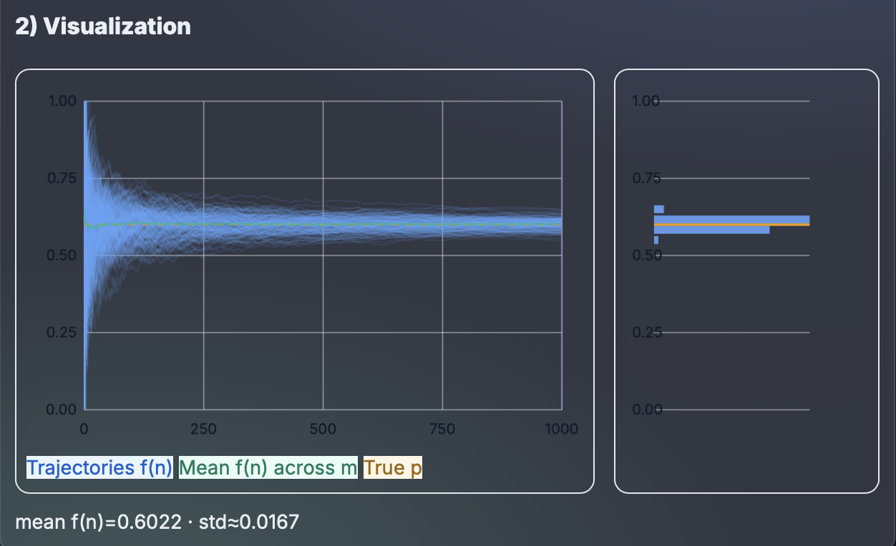
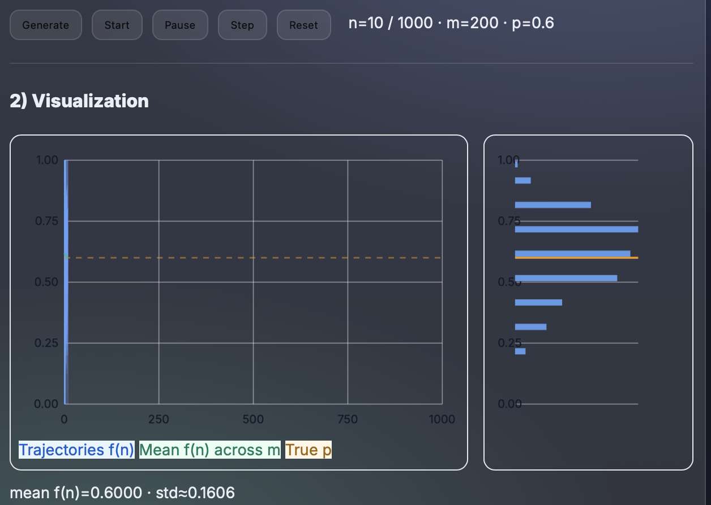
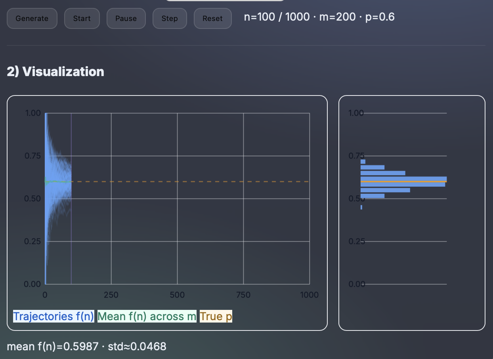
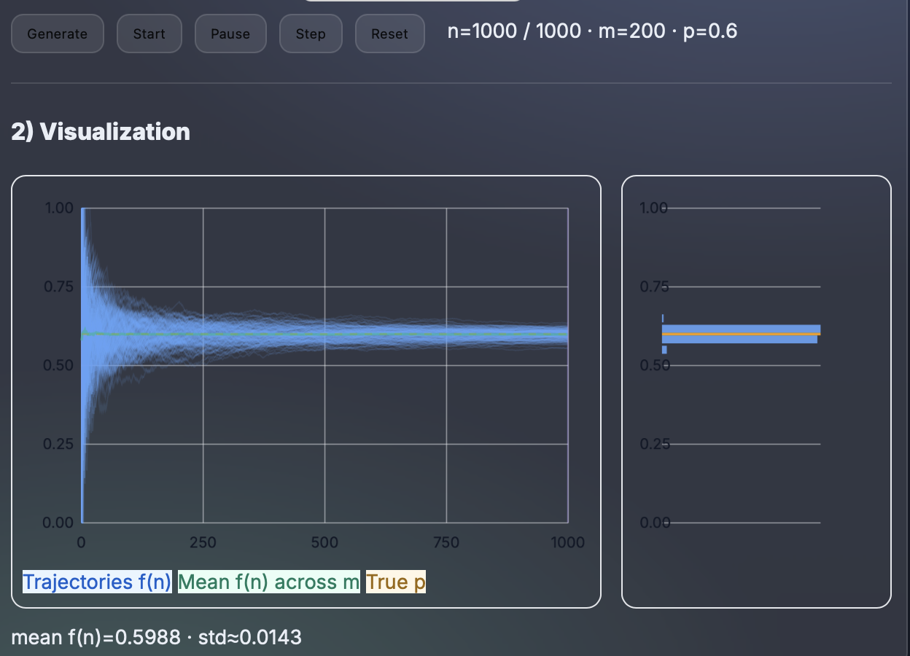
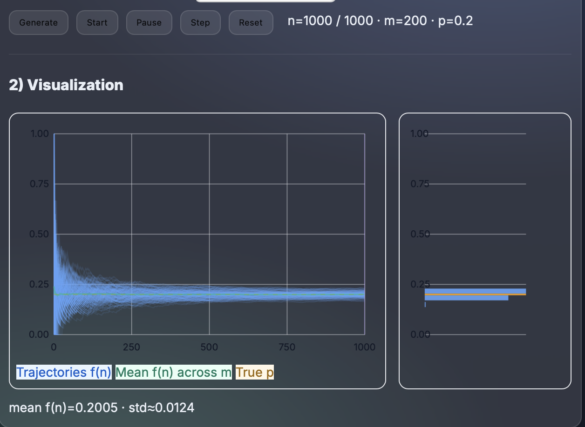
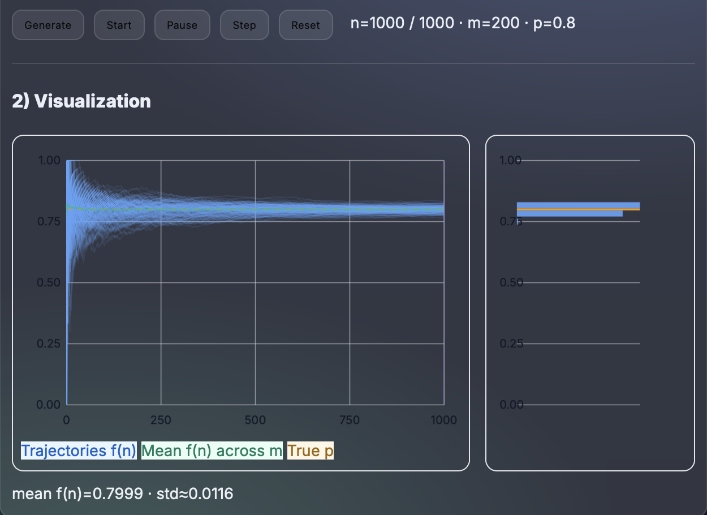
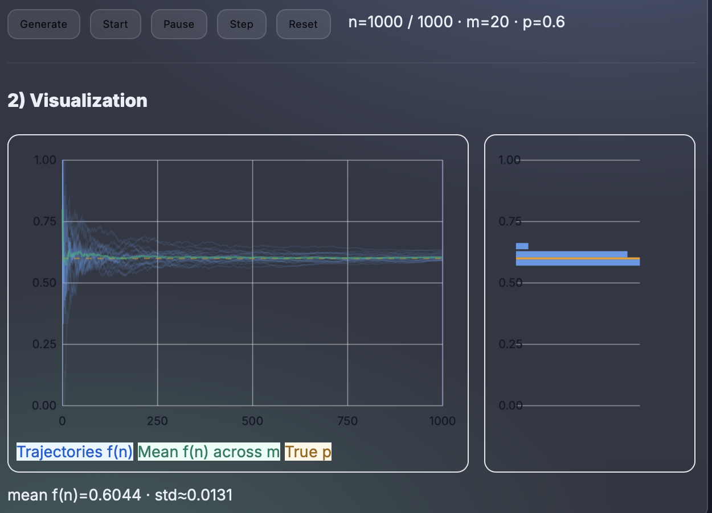
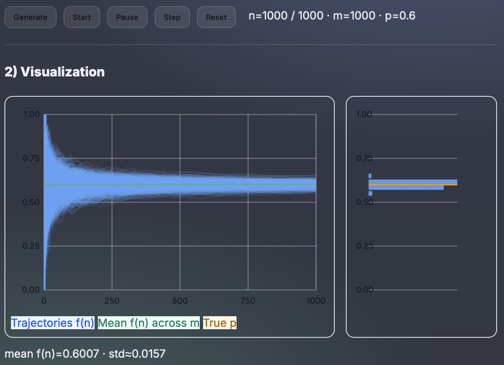

Law of Large Numbers & Empirical Convergence
Theory
The Law of Large Numbers (LLN) states that the relative frequency of a success
in repeated independent trials converges to the true probability p as the number of trials increases.
If each trial is Bernoulli(p), the running frequency f(n) = successes / n tends to p as n → ∞.
In this homework I simulate m independent trajectories of N Bernoulli trials.
On the left I plot each trajectory’s f(n) over time; on the right I show, at the current step,
the empirical distribution of f(n) across all trajectories (histogram).
As n becomes large, the histogram concentrates around p.
Interactive Experiment (JS)
1) Parameters
2) Visualization
Method (summary)
- I simulate
mindependent Bernoulli(p) trajectories of lengthN. - For each trajectory I compute the running relative frequency
f(n)=successes/n. - I plot all
f(n)curves; I overlay the truepand the cross-trajectory mean off(n). - At the current step
n, I build a histogram of allf_i(n)(i=1..m). - I observe how the empirical distribution becomes concentrated around
pasnincreases.
Observation
For small n trajectories fluctuate widely and the histogram is spread out.
As n grows, the histogram tightens around p, and the mean curve approaches the horizontal line at p.
This visually confirms the convergence predicted by the LLN.
Experimental Tests
Using the interactive simulator, I performed four empirical tests to verify the behavior predicted by the Law of Large Numbers.
Each experiment explores how the empirical frequency f(n) converges to the true probability p
under different parameter settings.
Test A — Baseline (p = 0.6, m = 200, N = 1000)
I generated 200 trajectories with p = 0.6 and N = 1000.
At the final step, the results were mean f(n) = 0.6022 and std ≈ 0.0167.
The theoretical value of the standard deviation is √(p·(1−p)/n) = 0.0155, which matches almost perfectly.
The histogram becomes sharply concentrated around 0.6, and all trajectories stabilize after roughly 300–400 trials.

Test B — Convergence over time (n = 10, 100, 1000)
Using the same parameters as in Test A, I paused the simulation at three different points
(n = 10, n = 100, and n = 1000)
to observe how the distribution of f(n) changes as the number of trials increases.
The measured standard deviations were:
- n = 10 → std ≈ 0.1606
- n = 100 → std ≈ 0.0468
- n = 1000 → std ≈ 0.0143
The results show a clear √(1/n) trend: when n grows from 10 to 100, the dispersion decreases by a factor of about 3, and when n increases from 100 to 1000, the spread becomes about 3× smaller again. In all cases, the mean remains close to 0.6, while the histogram gradually tightens and becomes almost symmetric around the true probability at large n.



Test C — Effect of p (p = 0.2 vs p = 0.8)
I compared two simulations with p = 0.2 and p = 0.8, both with m = 200 and N = 1000.
The measured values were:
- p = 0.2 → mean = 0.2005 · std ≈ 0.0124
- p = 0.8 → mean = 0.7999 · std ≈ 0.0116
Both results show nearly identical dispersion, confirming that the variance of f(n) depends only on p·(1−p).
The two histograms are symmetric with respect to p = 0.5, and the shape remains the same apart from the shifted center.


Test D — Effect of m (number of trajectories)
To study the influence of the number of trajectories, I compared runs with m = 20 and m = 1000
using p = 0.6 and N = 1000.
The results were:
- m = 20 → mean = 0.6044 · std ≈ 0.0131
- m = 1000 → mean = 0.6007 · std ≈ 0.0157
The standard deviation is almost the same, since it depends on n rather than m. However, the histogram with m = 20 appears rough and uneven, while with m = 1000 it becomes perfectly smooth. Increasing m improves the precision and visual stability of the mean curve but not the theoretical dispersion itself.


Results Summary
Across all tests, the results consistently align with the Law of Large Numbers.
The running frequency f(n) converges to the true probability p,
and the empirical dispersion scales as √(p·(1−p)/n).
Increasing n reduces the variability, while increasing m improves the stability of the estimates.
The overall behavior matches theoretical expectations both qualitatively and quantitatively.
Conclusion
Through this experiment I observe that the relative frequency of success stabilizes around the underlying probability p as the number of trials increases.
The simulation provides an intuitive, empirical confirmation of the Law of Large Numbers.